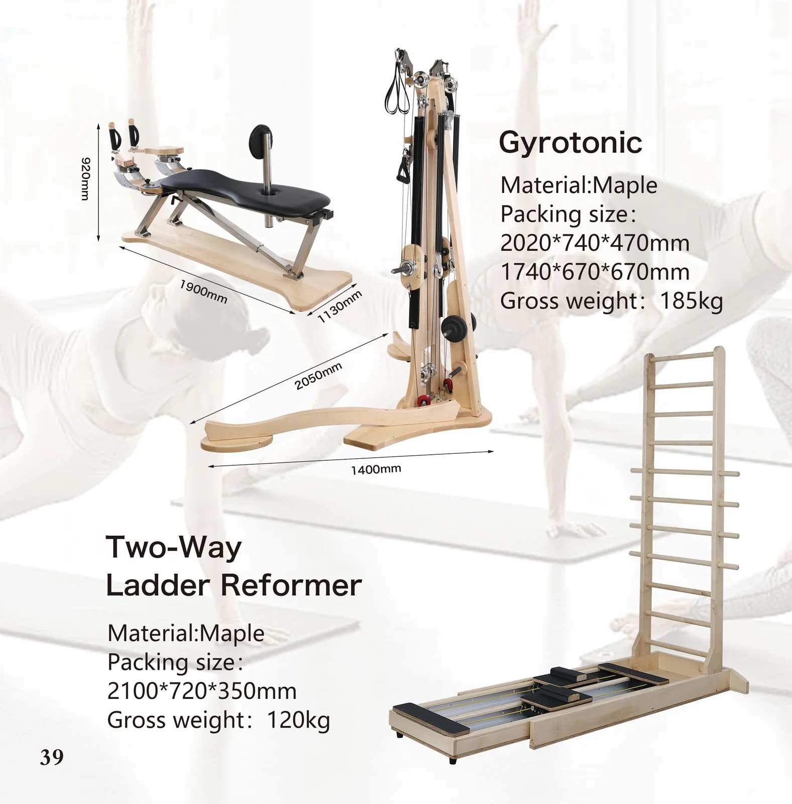
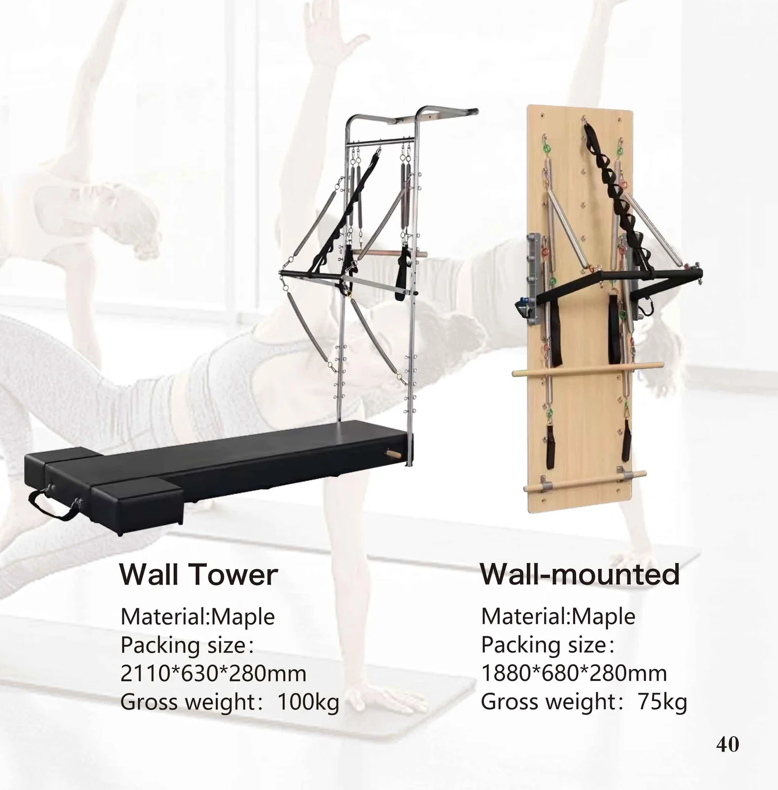

Two-Way Ladder Reformer
Catalogo p39 · modello 1 di 1
- Materiale
- Acero
- Dimensioni di imballaggio
- 2100 × 720 × 350 mm
- Peso lordo
- 120 kg
Oltre i cinque pezzi classici: il Ladder Bed bidirezionale per la riabilitazione ad alto volume e il set rotatore + torre a pulegge per il lavoro tridimensionale della colonna. Costruiti su ordinazione sulla stessa piattaforma in legno del resto della gamma.

Ogni macchina qui sotto è nel nostro catalogo 2026. Scegli il modello — nel preventivo indicheremo esattamente quel codice.
Ogni immagine è una pagina di catalogo esattamente come stampata. La specifica riportata nell'immagine è ripetuta come testo sottostante — così può essere cercata, tradotta e incollata direttamente in un ordine d'acquisto.

Catalogo p39 · modello 1 di 1

Catalogo p40 · modello 1 di 2
Catalogo p40 · modello 2 di 2
Raggruppati per linea, nell'ordine del catalogo. Il trattino indica che il catalogo non riporta quel valore — lo confermiamo per ogni ordine.
| Modello | Materiale | Dimensione d'imballo A | Dimensione d'imballo B | Peso lordo |
|---|---|---|---|---|
| Two-Way Ladder Reformer | Acero | 2100 × 720 × 350 mm | — | 120 kg |
| Wall Tower | Acero | 2110 × 630 × 280 mm | — | 100 kg |
| Wall-mounted | Acero | 1880 × 680 × 280 mm | — | 75 kg |
Tutti i modelli possono essere personalizzati per materiale, colore dell'imbottitura, fonte delle molle e imballaggio. Il trattino indica che il catalogo 2026 non riporta quel valore — lo confermiamo per ogni ordine.
Apertura o ampliamento di uno studio: set coordinati da 5 pezzi in un unico ordine e con un'unica spedizione.
Programmi di carico container con numerazione dei modelli e scheda tecnica personalizzate.
Produzione con marchio privato: il tuo logo sulla montatura, il colore e le caratteristiche della pelle a tua scelta.
Ladder Barrel, Spine Corrector e il sito bidirezionale Ladder Bed per uso clinico.
Linee compatte in alluminio e pieghevoli per ambienti benessere con spazio limitato.
Imballaggio e etichettatura conformi ai requisiti FBA per articoli destinati all’uso domesticoReformeri e pieghevoli.
Richiedi oggi stesso un preventivo personalizzato e dei campioni gratuiti.
Contatta il nostro team